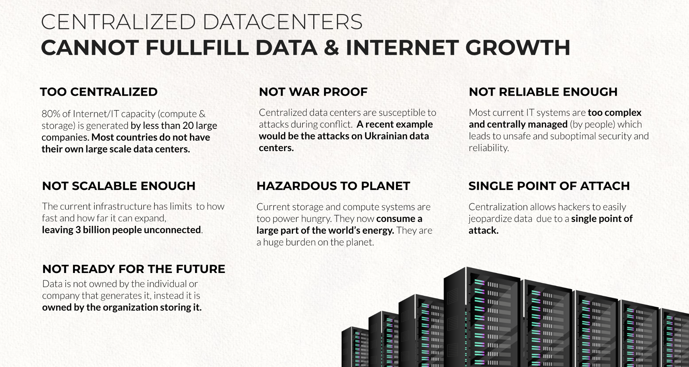

Countries Don't Own Their Internet

Data Privacy & Sovereignty
Almost all data of a country's internet users is not hosted on that country's soil. This leads to a loss of sovereignity and poses serious data risks to the citizens of your country.
Anyone who’s ever cleared a browser history feels like technology throws us back at ourselves. My Google data, combined with my bank card transactions, social media messages, health records, and more, could tell you more about me than I could.
Most of us don’t have the time or energy to keep track of all the data we’re shedding online, or read all the terms and conditions when downloading an app. (Ten years ago, two researchers at Carnegie Mellon found it would take the average internet user 25 days per year to read every privacy policy on every website they visited. Today, that number will only have increased) We are now in a position where we have to trust that regulators and industry leaders are keeping us safe.
But policy makers are struggling to keep up with the pace of technological advances. The number of devices collecting and analyzing information in real time, otherwise known as the internet of things, is expected to exceed 50 billion by 2020.
Recent, high-profile data breaches, such as Uber’s loss of 57 million users’ information, and political firm Cambridge Analytica’s misuse of Facebook data relating to nearly 90 million users, show even when we think we’re being careful online, we’re not always safe from harm.
For Most Countries The Internet is GDP Negative
Internet DATA is more important than voice (minutes) these days, the main communication of the future is through data, new regulations and technical guidelines are required to secure this future trend.
Most of the revenue related to internet and telecommunications services does not stay in your country and as such the internet is GDP negative. We believe that by means of practical technology and regulatory guidelines, this trend can be reversed. The value of a digital life in the US is thousands of USD per year per person; imagine the potential for your country.
Internet is too centralized

Too few individuals control access to the internet, leading to unjust pricing and security risks. It's too easy for hackers to focus on the few parties delivering access to the rest of us. More decentralization will lead to more security and fairer chances for everyone involved. Ledger (blockchain) technology can be used to decentralize internet access yet still give full insight to the country's government in relation to billing & utilization statistics.